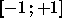
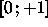
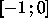
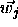

This function generates random points in an n-dimensional cube, throws out all vectors with length >1 and projects the remaining onto the surface of an n-dimensional unit hypersphere or onto one of its main diagonal sectors (main diagonal quadrant for n=2, octant for n=3, ...).
First the interval, from which the Kohonen weights for the initialization tasks are selected, is determined. Depending upon the initialization parameters, which have to be provided in field1 and field2, the interval may be

,
, or
.
Every component  of every Kohonen layer neuron j is then
assigned a random value from the above interval, yielding weight
vectors
of every Kohonen layer neuron j is then
assigned a random value from the above interval, yielding weight
vectors  , which are random points within an
n-dimensional hypercube. If the weight vector
, which are random points within an
n-dimensional hypercube. If the weight vector  thus
generated is outside the unit hypersphere or hypersphere sector, a new
random vector is generated until eventually one is inside the
hypersphere or hypersphere sector.
Finally, the length of each vector
thus
generated is outside the unit hypersphere or hypersphere sector, a new
random vector is generated until eventually one is inside the
hypersphere or hypersphere sector.
Finally, the length of each vector

is normalized to 1.The Grossberg layer weight vector components are all set to 1.
Note that this initialization function DOES produce weight vectors with equal point density on the hypersphere. However, the fraction of points from the hypercube which are inside the enscribed hypersphere decreases exponentially with increasing vector dimension, thus exponentially increasing the time to perform the initialization. This method is thus only suitable for input dimensions up to 12 - 15. (read Hecht-Nielsen: Neurocomputing, chapter 2.4, pp. 41 ff. for an interesting discussion on n-dim. geometry).